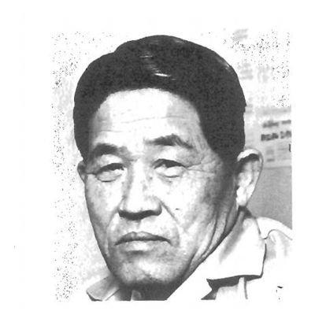

ENG ERICK KAMANDE NYAGA

OBJECTIVE
I began my career in telecommunication sector, but a few years ago, I was
drawn to the manufacturing space.I've always been skilled at bringing
people together and working towards common goal.My experience successfully
leading teams and managing production led me to consider manufacturing and
I've been building a career as a production supervisor for the last four
years.In my current role Toprich Motorcycles Ltd, the efficiency of the
office have been a personaal focus, especially as it relates to automobile
production process.I set and oversee goals related to department set
objectives.In my role, I also keep daily records and ensure safe workshop
practice.
EDUCATION
MASINDE MULIRO UNIVERSITY OF SCIENCE AND TECHNOLOGY
BSC MECHANICAL AND INDUSTRIAL ENGINEERING (2012-2017)
- Industrial Management
- Thermodynamics
- Renewable energy
- Fluid Mechanics
- Mechanics of Machines
- Control systems
- Power Plant technology
- Machining
- Pneumatic systems
WEITHAGA BOYS HIGH SCHOOL
O LEVEL (2007-2007)
- English - B
- Kiswahili - B
- Mathematics - A
- Pyhsics - A
- Biology - A
- Chemistry - A-minus
- Christian Religion Education - B-plus
- Business Studies - A
- Total Aggr - A-minus
WORK EXPERIENCE
TOPRICH MOTORCYCLES KENYA LTD
PRODUCTION SUPERVISOR (2021-NOW)
-
Supervising the manufacturing process, ensuring quality work is done
in a safe, efficient manner.
-
Diagnosing problems in the production line and providing
recommendations and training
-
Managing raw materials inventory and determining reordering level
-
Supervising and managing planned and unplanned maintenance of machines
and tools
- Overseeing safe use of equipment
-
Analyzing all facets of production and making recommedations for
improvement
- Ensuring strict adherence to safety guidelines
-
Performing verification of production output according to
specifications
-
Utilizing Lean six sigma methodologies and tools to improve
efficiency, reduce waste, and ensure high-quality output in the
production process.
DOSHI GROUP OF COMPANIES, STEEL DIVISION
MAINTENANCE TECHNICIAN (2019-2020)
- Conducted preventive maintenance to mechanical devices
- Operated cnc beam processing machine
- Performed emergency repairs
- Carried out calibration of mechanical monitoring equipment
- Interpreted technical drawings for new installations
- Maintained work order systems using maintenace management systems
- Monitored motors and uxilliary equipment
PRIME TELECOMMUNICAATIONS LTD
RIGGERS TEAM LEADER(2018-2019)
-
Installed mechanical equipment and systems related to the upgrade, such
as antennae and radio receivers
-
Collaborated with other teams and departments, such as structural
technicians, to ensure base station towers integrity
-
Adhered to safety protocols and procedures when working at heights, and
ensured that all team members were also following the required safety
procedures.
-
Maintained accurate records and documentation of work performed and
equipment conditions, and provided regular updates to the project
manager on the progress of the modernization project.
-
Participated in execution of a project to medernize safaaricom
communication systems to include Huawei 4G and 5G bands and ensured the
design was followed within the specified time of project execution.
-
completed training on work at height safety, high frequency awareness
and work at height rescue procedure.
KENGEN, UPPER TANA POWER PLANT, OLKARIA GEOTHERMAL POWER STATION (WELL
HEADS)
ATACHEE MECHANICAL TECHNICIAN (014-2017)
- Maintained and serviced water pumps
-
Conducted monthly maintenance of francis turbine among other machines
- Inducted into hydro power generation system
- Inducted into company safety precautions and policies
- Assembled new water pumps arrangements
-
Inducted into sensors,equipment calibration and automation of pneumatic
and hydraulic systems
- Maintained and monitored steam lines
- Serviced field generators and compressors
-
Inducted into control of generators output to match the phase,frequency
and voltage of the grid
- Inducted into commisioning and decomissioning power plants
- Aligned and centered turbine and generator turbines
SKILLS
- Preventive maintenance
- Handtools
- Machine assembly
- Power tools
- Solidworks
- Microsoft excel
- RCA methodology
- VSM
- lean manufaacturing
- Six sigma
Hobbies